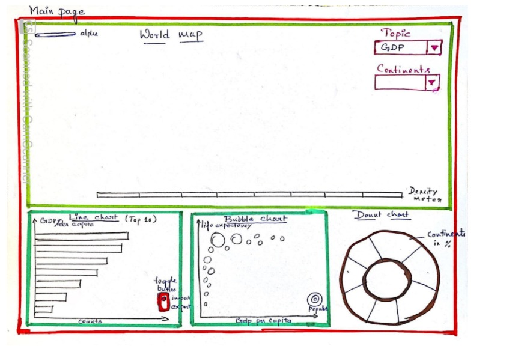
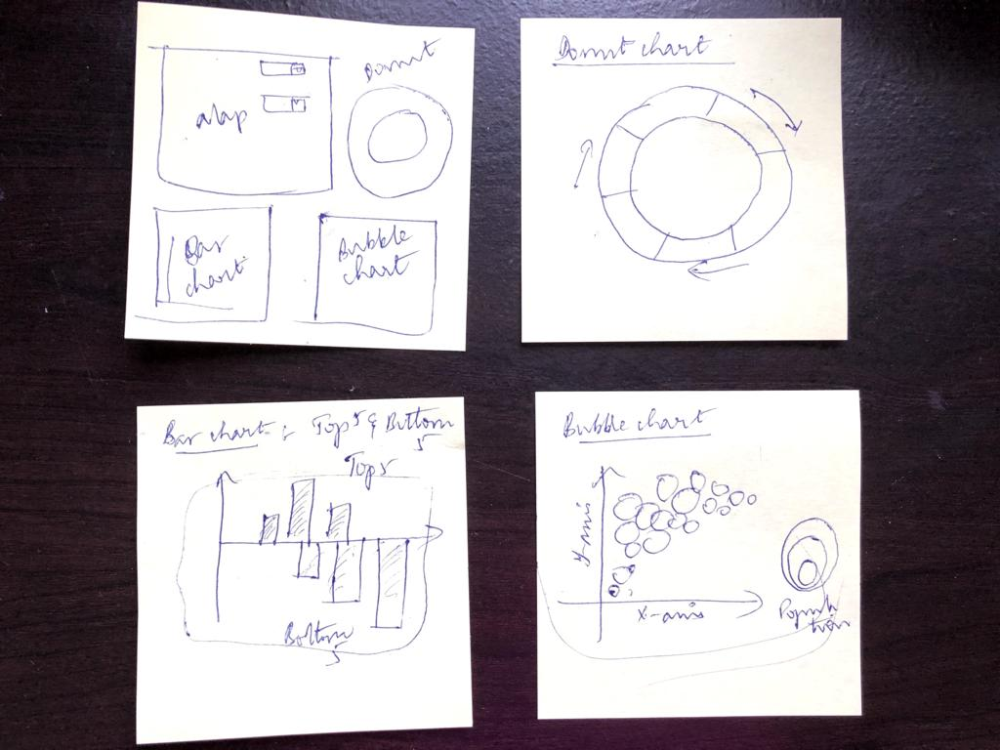
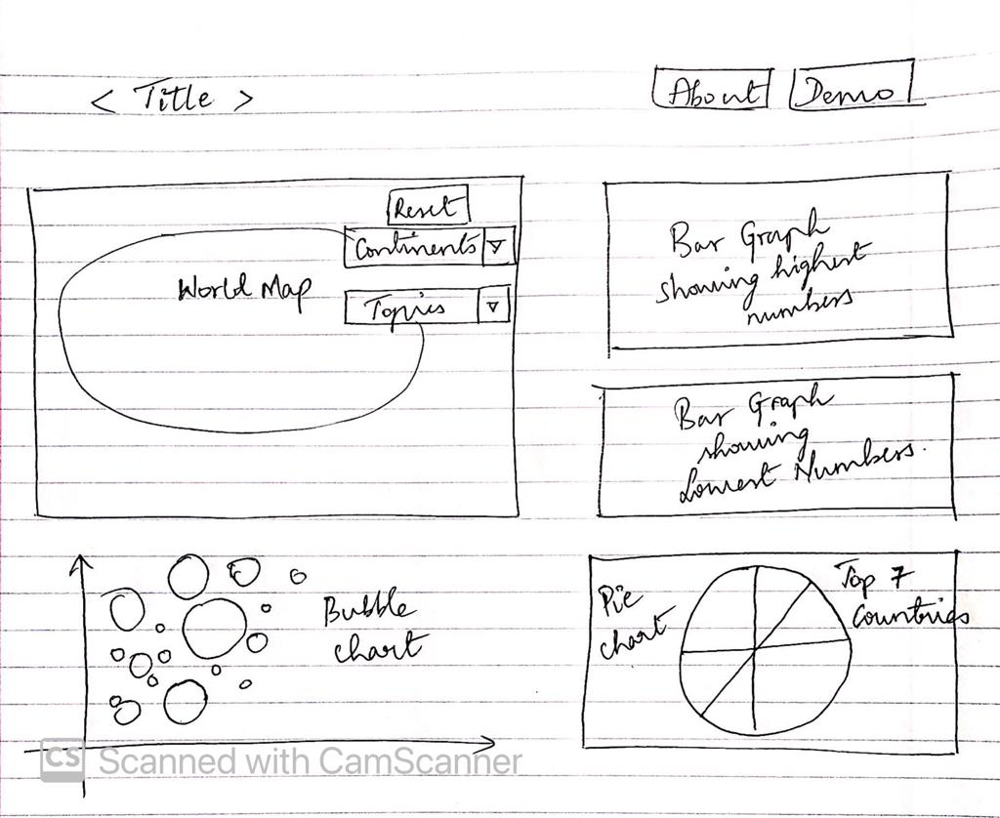

Introduction:
This project is created as part of our course H517: "Visualization Design, Analysis, & Evaluation" at IUPUI, instructed by Dr. Khairi Reda. This project is equally contributed by P.Vandana, Shruti, Mounika, Abhishek. The objective of this project is to create world map using today's tools of trade (D3JS, to be specific). In addition to creating the original world map in an interactive version, we have added additional charts around the map, as well as interface elements to make the data more interactive. We have obtained a GeoJson file (World.json) to create the World map. This includes the vector map of continents and countries. We used the data from Factbook to show different aspects of the world like Population, Area, GDP etc.
Here is the link to World Map GeoJson file: GeoJson File
Here is the link to Factbook data: Countries Factbook
Here is the GitHub link to world-o-meter repository: GitHub Repository
Design Process:
1. How did we go about designing the visualization?
● Firstly, we tried to understand the data that we gathered which includes world.json and factbook.csv
● Next we started to plan and figure out how to handle the data obtained and planned on how to layout our designs.
● Since we are very new to D3JS, HTML, CSS, Java Script, we did a lot of research and watched a lot of training videos.
● We did spend a lot of time understanding how to process JSON and CSV files using d3js.
2. What are some of the initial designs / ideas we attempted in the beginning?
● Once we got a grip on how to handle the data obtained, we started to look for the sample visualizations that fit our needs at D3JS.ORG and D3 Graph Gallery
● With the help of these sample tutorials and documentations, we worked on a few sketches on how and where the given data should be placed and came up with the below designs.
  
● After having our sketches sorted out, we first started to plot World map on SVG and added css to create some look and feel.
● Once the Map with continents and countries looked good, we started to give a color density chart based on the size of population.
● Then we went on with passing the factbook data to the world map based on country names which is a common attribute for both geojson and factbook files.
● After that we went ahead with creating an animated version of barcharts for top ten and bottom ten countries with respect to different topics as selected on the dropdown placed on top right corner of the map.
● We then created a bubble chart and Donut chart.
● Once the Graphs came into shape, we wanted an interaction between Graphs and Map.
● This interaction works when ever a continent or a topic is selected from the dropdown list placed on the top right corner of the map.
● We also created a Reset button which resets the map to show the initial position.
Design Choices:
● Since this is a creation of World map using modern tools we wanted it to look simple, modern, clean and clear.
● We wanted to use all kinds of styles as much as possible to make this look and feel possible.
● We also wanted to use hover affects, shades, color codes, click effects.
● We added buttons for resetting the map, for going to the Documentation and for coming back to Visualization. These buttons have hover effect, click effect and color coding.
● Just by hovering on a particular bar on the graph, it will highlight the corresponding country on the map.
● This hovering will give color effects that will make you easily understand what changes are going on.
● We have selected all the colors after checking them with color blindness simulation tool to make sure they are ok. We used Color Schemes for this purpose
● We initially used on click action for Graph to show the interaction but then we wanted it to be more easy for the user, so, we changed it to mousemove action.
1. Why did we use color to encode a particular variable?
● All the colors selected for this visualization are color-blind safe and the choices are made with the help of Color Schemes.
● The idea was to show variations of all the 4 different topics chosen from the drop-down list in the map.
● Incoroporated a Color density meter to show represent a particular topic selected that reflects the countries and continents on the map.
● Preferably Sequential colors have been chosen to depict variables on the map as the data was categorical.
● On the other hand, the Bar chart and Bubble chart shows its own colors for all the bars and bubbles unless a mouse is hovered on them.
● When the mouse is hovered on a particular bar, the color of the bar changes to a particular color, and when the mouse is released from the map again there is a change in color.
● This is done to make the user understand that the bar has already been visited.
● Different colors have been chosen on the pie chart to show variation of the countries.
2. Why did I arrange my charts in a particular way?
● I have placed Map on the left and Graph on the right to make interactions easy and user friendly and clearly visible.
● I placed a button on the top to navigate to Documentation page.
● Documentation page contains detailed description, Youtube Demonstration Video and Additional Graphs and Visualizations.
● I placed another button on the Documentation page to return back to visualization.
Proposal Questions:
1) The relationship between GDP and public debt of the country?
2) How unemployment might affect life expectancy?
3) Electricity productions vs electricity consumption by country?
4) The oil consumption vs oil production for the countries?
5) The Inflation rate by country?
Observations:
● We have observed that UK and US are the top countries in Public Debt.
● We have observed that US is the top country in Electricity Consumption with a vast difference compared to other countries.
● Even though China is top in Population its Electricty Consunmtion is less than half of United States Consumption.
● US is on top of the list for Oil Consumption, compared to every other country, actually its almost 3 times more than Japan.
● Bangladesh stands on the top for Unemployment rate.
© 2020 World-o-meter, All rights reserved.